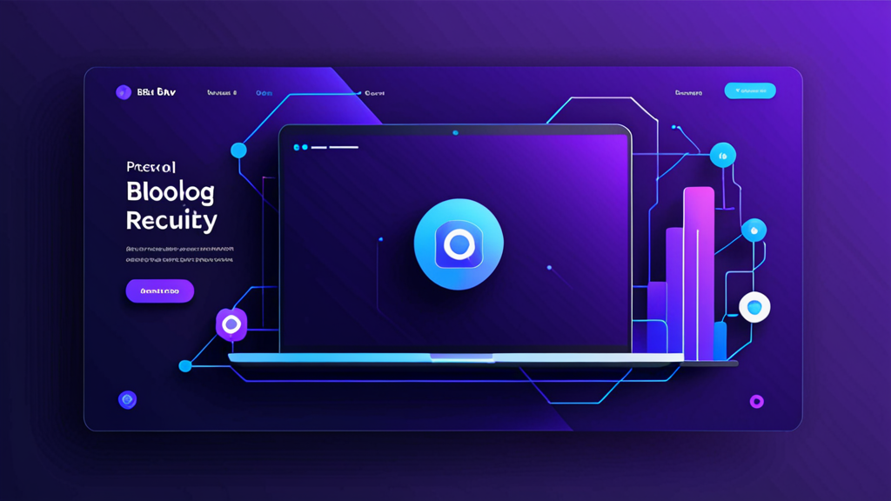

채용 메시지를 위한 최고의 AI 답장 도구: 리크루터를 위한 스마트 아웃리치 가이드
수동적 구직자에게 보내는 LinkedIn 메시지를 개인화하는 데 10분 이상을 투자해본 적이 있다면, 그 고통을 잘 알 것입니다. 자연스럽게 들리고, 상대방의 구체적인 경험을 언급하며, 올바른 행동 유도 문구를 포함해야 하는데 — 실수로 잘못된 회사 이름을 붙여넣지 않도록 조심해야 하죠.
채용 메시지를 위한 최고의 AI 답장 도구는 바로 이 문제를 해결해줍니다. 템플릿처럼 느껴지지 않고 개인적인 느낌을 주는 아웃리치를 작성하도록 도와줍니다. 하지만 모든 도구가 동일하게 작동하지는 않으며, 효과적으로 사용하는 방법을 아는 것이 로봇처럼 들리는 것과 실제로 숙제를 한 리크루터처럼 들리는 것의 차이를 만듭니다.
이 가이드에서는 AI 리크루터 어시스턴트에서 무엇을 찾아야 하는지, 자신의 목소리를 잃지 않고 사용하는 방법, 그리고 응답률을 높이기 위한 실용적인 팁을 다룹니다.
리크루터가 더 나은 메시지 작성법을 필요로 하는 이유
리크루터는 매주 수십 통, 때로는 수백 통의 메시지를 보냅니다. 각 메시지마다 컨텍스트 전환이 필요합니다. 후보자의 프로필을 검토하고, 직무 설명을 확인하며, 넘치는 받은 편지함에서 눈에 띄는 메시지를 작성해야 하죠.
그 결과, 많은 리크루터가 일반적인 템플릿에 의존하게 됩니다. 후보자들은 이를 즉시 알아차립니다. LinkedIn 데이터에 따르면, InMail 응답률은 평균 20~25% 정도이며, 메시지가 대량 생산된 느낌을 줄 때 이 수치는 크게 떨어집니다.
리크루터 메시지 생성기는 단순히 시간을 절약해주는 것 이상의 역할을 합니다. 대량의 메시지에서도 품질을 유지하도록 도와줍니다. 후보자의 직무, 산업, 프로필의 관련 세부 정보를 끌어와 초안을 생성할 수 있다면, 답장을 받을 가능성이 훨씬 높아집니다.
채용 메시지를 위한 최고의 AI 답장 도구의 조건
모든 AI 작성 도구가 채용에 최적화되어 있는 것은 아닙니다. 도구를 선택하기 전에 다음 사항을 확인하세요.
1. 컨텍스트 인식
도구는 사용자가 누구인지, 후보자가 누구인지, 어떤 직무를 채용 중인지 이해해야 합니다. 컨텍스트를 고려하지 않는 일반 AI 챗봇은 모호하고 사용할 수 없는 초안을 생성합니다.
2. 톤 조절
전문적이고 공식적인 톤에서 캐주얼하고 직접적인 톤까지 조절할 수 있는 기능이 필요합니다. 하나의 스타일로만 작성하는 후보자 아웃리치 도구는 다양한 직무와 산업에서 효과적으로 사용할 수 없습니다.
3. 플랫폼 통합
최고의 도구는 이미 사용 중인 플랫폼에서 작동합니다. LinkedIn Recruiter, Greenhouse, Lever, Workday 등이 포함됩니다. 탭 간에 복사하여 붙여넣기를 해야 한다면 자동화의 목적이 무색해집니다.
4. 개인정보 보호 및 제어
API 키가 노출되거나 메시지가 자동 전송될 걱정은 절대 하지 말아야 합니다. 채용 메시지를 위한 최고의 AI 답장 도구는 전송되는 내용을 완전히 제어할 수 있게 해주고 데이터를 로컬에 보관합니다.
AI처럼 들리지 않고 AI 리크루터 어시스턴트 사용하는 방법
최고의 도구라도 사용자가 적절히 지시하지 않으면 딱딱한 결과물을 내놓을 수 있습니다. 인간적인 터치를 유지하는 방법은 다음과 같습니다.
강력한 프롬프트로 시작하기
"생성" 버튼만 누르지 마세요. 도구에 구체적인 세부 정보를 입력하세요.
- 후보자의 현재 직무 및 회사
- 프로필에 있는 특정 프로젝트 또는 성과
- 이 직무가 후보자의 경력 경로에 왜 적합한지
프롬프트 예시:
"Spotify의 시니어 프로덕트 매니저에게 보낼 짧은 LinkedIn 메시지를 작성해줘. 그들의 기능 개인화 작업을 언급해줘. 직무는 시리즈 B 핀테크 스타트업의 프로덕트 리드야. 톤은 친근하지만 전문적으로."
결과물 편집하기
보내기 전에 항상 초안을 읽어보세요. 부자연스럽게 느껴지는 문구는 제거하세요. 자신만이 알아차릴 수 있는 개인적인 질문이나 관찰을 추가하세요. AI는 시작점일 뿐이며, 메시지를 완성하는 것은 당신의 목소리입니다.
단계별로 다른 템플릿 사용하기
콜드 아웃리치 메시지는 거절 편지처럼 들리면 안 됩니다. AI 리크루터 어시스턴트는 다음과 같은 단계 간 전환을 허용해야 합니다.
- 초기 아웃리치
- 후속 메시지 (응답이 없는 경우)
- 면접 초대
- 거절 또는 업데이트
각 단계마다 다른 톤과 세부 수준이 필요합니다.
실용적인 예시: AI 어시스턴트 사용 전후 비교
AI 도구가 메시지를 개선하는 실제 시나리오를 살펴보겠습니다.
콜드 아웃리치
사용 전 (일반 템플릿):
"[이름]님, 프로필을 보고 연락드렸습니다. 저희 회사의 한 직무에 잘 맞을 것 같아요. 관심 있으시면 알려주세요."
사용 후 (AI 리크루터 어시스턴트 사용):
"Sarah님, HubSpot에서의 사용자 유지 업무가 눈에 띄었습니다. 특히 이탈률을 12% 줄인 캠페인이 인상적이었어요. 저희는 시리즈 A 회사에서 비슷한 성장 팀을 구축 중이며, Sarah님의 전문성이 필요합니다. 이번 주에 빠르게 대화 나눠보실래요?"
두 번째 메시지는 구체적인 업무를 언급하고, 조사한 흔적을 보여주며, 명확한 질문을 던집니다. 이것이 삭제와 답장의 차이입니다.
후속 메시지
사용 전:
"이전 메시지에 대한 후속 연락입니다. 관심 있으시면 알려주세요."
사용 후:
"Sarah님 — 바쁘신 걸 알기에 짧게 하겠습니다. 지금 타이밍이 안 맞아도 전혀 괜찮습니다. 하지만 직무에 대해 궁금하시다면 더 자세한 내용을 공유해드리고 싶어요. 어찌됐든 검토해주셔서 감사합니다."
이 후속 메시지는 후보자의 시간을 존중하고 압박을 제거하여, 종종 응답을 이끌어냅니다.
후보자 응답률을 높이는 팁
채용 메시지를 위한 최고의 AI 답장 도구를 사용하는 것은 방정식의 일부일 뿐입니다. 아웃리치를 개선하기 위한 추가 전략은 다음과 같습니다.
프로필 너머로 개인화하기
최근 게시물, 공통 연결, 또는 참석한 컨퍼런스에 대한 내용을 언급하세요. AI가 항상 이러한 뉘앙스를 포착할 수는 없으므로 수동으로 추가하세요.
짧게 유지하기
후보자들은 모바일에서 메시지를 읽습니다. 최대 3~5문장을 목표로 하세요. AI 초안이 더 길다면 줄이세요.
부담 없는 요청 포함하기
"전화 일정을 잡을 수 있을까요?" 대신 "궁금하시다면 직무 설명서를 보내드릴게요"를 시도해보세요. 낮은 약속 = 높은 응답률입니다.
명확한 제목 줄 사용하기 (이메일의 경우)
Greenhouse나 Lever 같은 ATS를 사용한다면 메시지가 후보자의 받은 편지함에 도착할 수 있습니다. "직업 기회" 대신 "[회사]에서의 경험에 대한 간단한 질문"과 같은 제목 줄을 사용하세요.
채용 자동화가 여전히 인간적으로 느껴져야 하는 이유
일부 리크루터는 AI를 사용하면 덜 진정성 있게 보일까 걱정합니다. 하지만 그 반대입니다. 글쓰기의 반복적인 부분을 자동화하면 후보자의 프로필을 읽고, 적합성을 고려하며, 관계를 구축하는 중요한 부분에 정신적 에너지를 쏟을 수 있습니다.
채용 자동화 도구는 타이핑을 처리해야 하지, 생각을 처리해서는 안 됩니다. 최고의 도구는 그 경계를 존중합니다.
워크플로우에 맞는 도구 선택하기
옵션을 평가 중이라면 도구가 일상 업무에 어떻게 맞는지 고려하세요. 대부분의 시간을 LinkedIn Recruiter에서 보내나요? 아니면 Workday나 Lever 같은 ATS 내에서 작업하나요? 채용 메시지를 위한 최고의 AI 답장 도구는 별도로 열어야 하는 앱이 아니라 기존 워크플로우에 원활하게 통합됩니다.
보안도 고려하세요. 조직이 민감한 후보자 데이터를 처리한다면, 정보를 로컬에서 처리하고 메시지를 외부 서버에 저장하지 않는 도구가 필요합니다. 화려한 기능보다 개인정보 보호 우선 설계가 더 중요합니다.
이러한 기준을 충족하는 도구 중 하나는 RecruitReply AI입니다. LinkedIn Recruiter 및 주요 ATS 플랫폼 내에서 작동하고, 온디바이스 AI를 사용하며, 메시지를 자동 전송하지 않습니다. 하지만 어떤 도구를 선택하든 이 가이드의 원칙은 적용됩니다.
마무리 생각
채용 메시지를 위한 최고의 AI 답장 도구는 리크루터를 대체하는 것이 아닙니다. 마찰을 제거하는 것입니다. 개인화되고 인간적인 초안을 몇 초 만에 생성할 수 있다면, 더 나은 메시지를 더 일관되게, 더 적은 노력으로 보낼 수 있습니다.
이는 더 높은 응답률, 더 나은 후보자 관계, 그리고 실제로 중요한 채용의 전략적 부분에 더 많은 시간을 할애할 수 있음을 의미합니다.
워크플로우와 후보자의 개인정보를 존중하는 도구를 사용해보고 싶다면, RecruitReply AI를 확인해보세요. 더 빠르게, 더 나은 메시지를 작성하면서도 자신의 목소리를 잃지 않기를 원하는 리크루터를 위해 설계되었습니다.